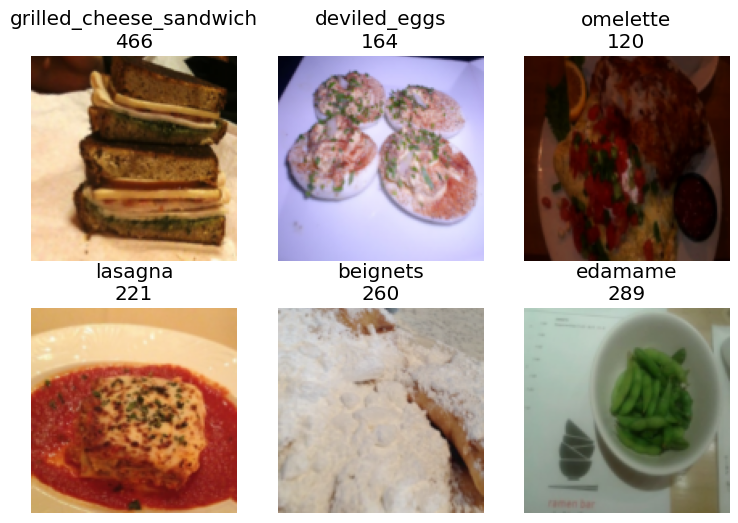

AIM :
In this we want to create a multi-traget model i.e to predict calorie count & food type.
Call library, download data, create folder blah blah..
#hide
!pip install -Uqq fastbook
!pip install timm
import fastbook
fastbook.setup_book()
import timm
#hide
from fastbook import *
from fastai.vision.widgets import *
from fastai.vision.all import *
path = Path('/content')
untar_data(URLs.FOOD, data=path)
# actual path to train image folder
train_path = Path('/content/food-101/images')
test_path = Path('/content/food-101/test')
# Create Test folder
import os
import random
import shutil
def move_images_to_test(source_folder, test_folder, percentage=0.1):
# Create the test folder if it doesn't exist
os.makedirs(test_folder, exist_ok=True)
# Iterate through each subfolder in the source folder
for subfolder in os.listdir(source_folder):
subfolder_path = os.path.join(source_folder, subfolder)
# Check if it's a directory
if os.path.isdir(subfolder_path):
# Get a list of all image files in the subfolder
image_files = [f for f in os.listdir(subfolder_path) if f.endswith('.jpg')]
# Calculate the number of images to move
num_images_to_move = int(len(image_files) * percentage)
# Randomly select images to move
images_to_move = random.sample(image_files, num_images_to_move)
# Move selected images to the test folder
for image in images_to_move:
source_path = os.path.join(subfolder_path, image)
dest_path = os.path.join(test_folder, image)
shutil.move(source_path, dest_path)
if __name__ == "__main__":
move_images_to_test(train_path, test_path, percentage=0.15)Requirement already satisfied: timm in /opt/conda/lib/python3.10/site-packages (0.9.16)
Requirement already satisfied: torch in /opt/conda/lib/python3.10/site-packages (from timm) (2.1.2)
Requirement already satisfied: torchvision in /opt/conda/lib/python3.10/site-packages (from timm) (0.16.2)
Requirement already satisfied: pyyaml in /opt/conda/lib/python3.10/site-packages (from timm) (6.0.1)
Requirement already satisfied: huggingface_hub in /opt/conda/lib/python3.10/site-packages (from timm) (0.20.3)
Requirement already satisfied: safetensors in /opt/conda/lib/python3.10/site-packages (from timm) (0.4.2)
Requirement already satisfied: filelock in /opt/conda/lib/python3.10/site-packages (from huggingface_hub->timm) (3.13.1)
Requirement already satisfied: fsspec>=2023.5.0 in /opt/conda/lib/python3.10/site-packages (from huggingface_hub->timm) (2024.2.0)
Requirement already satisfied: requests in /opt/conda/lib/python3.10/site-packages (from huggingface_hub->timm) (2.31.0)
Requirement already satisfied: tqdm>=4.42.1 in /opt/conda/lib/python3.10/site-packages (from huggingface_hub->timm) (4.66.1)
Requirement already satisfied: typing-extensions>=3.7.4.3 in /opt/conda/lib/python3.10/site-packages (from huggingface_hub->timm) (4.9.0)
Requirement already satisfied: packaging>=20.9 in /opt/conda/lib/python3.10/site-packages (from huggingface_hub->timm) (21.3)
Requirement already satisfied: sympy in /opt/conda/lib/python3.10/site-packages (from torch->timm) (1.12)
Requirement already satisfied: networkx in /opt/conda/lib/python3.10/site-packages (from torch->timm) (3.2.1)
Requirement already satisfied: jinja2 in /opt/conda/lib/python3.10/site-packages (from torch->timm) (3.1.2)
Requirement already satisfied: numpy in /opt/conda/lib/python3.10/site-packages (from torchvision->timm) (1.26.4)
Requirement already satisfied: pillow!=8.3.*,>=5.3.0 in /opt/conda/lib/python3.10/site-packages (from torchvision->timm) (9.5.0)
Requirement already satisfied: pyparsing!=3.0.5,>=2.0.2 in /opt/conda/lib/python3.10/site-packages (from packaging>=20.9->huggingface_hub->timm) (3.1.1)
Requirement already satisfied: MarkupSafe>=2.0 in /opt/conda/lib/python3.10/site-packages (from jinja2->torch->timm) (2.1.3)
Requirement already satisfied: charset-normalizer<4,>=2 in /opt/conda/lib/python3.10/site-packages (from requests->huggingface_hub->timm) (3.3.2)
Requirement already satisfied: idna<4,>=2.5 in /opt/conda/lib/python3.10/site-packages (from requests->huggingface_hub->timm) (3.6)
Requirement already satisfied: urllib3<3,>=1.21.1 in /opt/conda/lib/python3.10/site-packages (from requests->huggingface_hub->timm) (1.26.18)
Requirement already satisfied: certifi>=2017.4.17 in /opt/conda/lib/python3.10/site-packages (from requests->huggingface_hub->timm) (2024.2.2)
Requirement already satisfied: mpmath>=0.19 in /opt/conda/lib/python3.10/site-packages (from sympy->torch->timm) (1.3.0)100.00% [5686607872/5686607260 02:26<00:00]
Name of all subfolders
subfolders = [f.name for f in os.scandir(train_path) if f.is_dir()]
len(subfolders)101Calorie and Food Name Folder
Create a dataframe which will have all Images from training folder as Index and have sub folder and calorie count(which is random).
# Initialize empty lists to store subfolder names and file names
subfolder_names = []
file_names = []
# Walk through the directory and its subdirectories
for root, dirs, files in os.walk(train_path):
for file in files:
# Get the subfolder name
subfolder_name = os.path.relpath(root, train_path)
# Append the subfolder name and file name to the lists
subfolder_names.append(subfolder_name)
file_names.append(file)
# Create a DataFrame
df = pd.DataFrame({'Subfolder_Name': subfolder_names, 'File_name': file_names})
# Generate random calories
calories = np.random.randint(100, 800, len(list(set(subfolder_names))))
# Create a DataFrame
Calorie_Df = pd.DataFrame({'Subfolder_Name': list(set(subfolder_names)), 'Calories': calories})
# Merge the two DataFrames on 'Subfolder_Name'
df = pd.merge(df, Calorie_Df, on='Subfolder_Name', how='left')
# Display the DataFrame with 'File_name' as the index
df.set_index('File_name', inplace=True)
# Display the updated DataFrame
df.head()| Subfolder_Name | Calories | |
|---|---|---|
| File_name | ||
| 524965.jpg | fish_and_chips | 479 |
| 1863408.jpg | fish_and_chips | 479 |
| 16967.jpg | fish_and_chips | 479 |
| 1798422.jpg | fish_and_chips | 479 |
| 3806847.jpg | fish_and_chips | 479 |
Get Calorie
Get subsequent calorie as per food type
df.loc['1863408.jpg', 'Calories']479def get_calorie(p): return df.loc[p.name, 'Calories']Dataloaders
Let’s create Dataloaders & to do that we will use DataBlock API, which is convenient in achieving our goal.
dls = DataBlock(
blocks=(ImageBlock,CategoryBlock,CategoryBlock),
n_inp=1,
get_items=get_image_files,
get_y = [parent_label,get_calorie],
splitter=RandomSplitter(0.2, seed=42),
item_tfms=Resize(192, method='squish'),
batch_tfms=aug_transforms(size=128, min_scale=0.75)
).dataloaders(train_path)Explanation of the code
blocks=(ImageBlock,CategoryBlock,CategoryBlock)it will generate three outputs: an image (which we want to use for training), a categorical variable representing the calorie content, and another categorical variable representing the food type. We can add as many additional features as needed.
n_inp=1This line will tell to our dataloader that only 1 of them(1st block i.e ImageBlock) is Independent variable & other two are target variable.
get_items=get_image_filesUse get_image_files to get a list of inputs.
get_y = [parent_label,get_calorie]To create the two outputs for each file, call two functions: parent_label (from fastai) and get_calorie (defined above).
Rest of the lines are already explained in 1st lecture
Batch
dls.show_batch(max_n=6)
Replicating the disease model
Now we’ll replicate the same disease model we’ve made before, but have it work with this new data.
The key difference is that our metrics and loss will now receive three things instead of two: the model outputs (i.e. the metric and loss function inputs), and the two targets (food_type and calorie). Therefore, we need to define slight variations of our metric (error_rate) and loss function (cross_entropy) to pass on just the food_type target:
def food_err(inp,food,calorie): return error_rate(inp,food)
def food_loss(inp,food,calorie): return F.cross_entropy(inp,food)We’re now ready to create our learner.
There’s just one wrinkle to be aware of. Now that our DataLoaders is returning multiple targets, fastai doesn’t know how many outputs our model will need. Therefore we have to pass n_out when we create our Learner – we need 101 outputs(no of food type), one for each possible disease:
arch = 'convnext_small_in22k'
learn = vision_learner(dls, arch, loss_func=food_loss, metrics=food_err, n_out=101).to_fp16()
lr = 0.1/opt/conda/lib/python3.10/site-packages/timm/models/_factory.py:117: UserWarning: Mapping deprecated model name convnext_small_in22k to current convnext_small.fb_in22k.
model = create_fn(
model.safetensors: 0%| | 0.00/265M [00:00<?, ?B/s]When we train this model we should get similar results to what we’ve seen with similar models before:
learn.fine_tune(5, lr)| epoch | train_loss | valid_loss | food_err | time |
|---|---|---|---|---|
| 0 | 5.858690 | 16.570326 | 0.348107 | 05:03 |
| epoch | train_loss | valid_loss | food_err | time |
|---|---|---|---|---|
| 0 | 2.052801 | 24.203112 | 0.343390 | 05:33 |
| 1 | 2.231666 | 2.649899 | 0.373966 | 05:40 |
| 2 | 1.380835 | 2.181304 | 0.322423 | 05:39 |
| 3 | 0.629317 | 1.560569 | 0.217123 | 05:32 |
| 4 | 0.358618 | 1.224057 | 0.192137 | 05:31 |
Multi-Target Model
We had a model that predicted 100 things(no of food types) and among these whomsoever have the highest probability(food type) will assign to that image. So, now I want to have a model that can predict 202 things(101 food type + 101 calorie count).
We can define disease_loss just like we did previously, but with one important change: the input tensor is now length 202, not 101, so it doesn’t match the number of possible food type. We can pick whatever part of the input we want to be used to predict food type. Let’s use the first 101 values:
def food_loss(inp,food,calorie): return F.cross_entropy(inp[:,:101],food)That means we can do the same thing for predicting variety, but use the last 10 values of the input, and set the target to variety instead of disease:
def calorie_loss(inp,food,calorie): return F.cross_entropy(inp[:,101:],calorie)Our overall loss will then be the sum of these two losses:
def combine_loss(inp,food,calorie): return food_loss(inp,food,calorie)+calorie_loss(inp,food,calorie)Error Rate for each of the output
def food_err(inp,food,calorie): return error_rate(inp[:,:101],food)
def calorie_err(inp,food,calorie): return error_rate(inp[:,101:],calorie)
err_metrics = (food_err,calorie_err)
all_metrics = err_metrics+(food_loss,calorie_loss)Let’s Create Learner
learn = vision_learner(dls, arch, loss_func=combine_loss, metrics=all_metrics, n_out=202).to_fp16()learn.fine_tune(5, lr)| epoch | train_loss | valid_loss | food_err | calorie_err | food_loss | calorie_loss | time |
|---|---|---|---|---|---|---|---|
| 0 | 13.486178 | 7.905050 | 0.442050 | 0.449971 | 3.916732 | 3.988317 | 04:29 |
| epoch | train_loss | valid_loss | food_err | calorie_err | food_loss | calorie_loss | time |
|---|---|---|---|---|---|---|---|
| 0 | 4.592400 | 44.517895 | 0.462085 | 0.457484 | 30.451624 | 14.066281 | 05:29 |
| 1 | 4.814772 | 8.256505 | 0.381246 | 0.378975 | 4.196504 | 4.060001 | 05:29 |
| 2 | 2.942243 | 12.322714 | 0.274898 | 0.278043 | 6.179482 | 6.143233 | 05:29 |
| 3 | 1.468126 | 3.271619 | 0.213395 | 0.213920 | 1.606259 | 1.665358 | 05:29 |
| 4 | 0.805262 | 4.968063 | 0.191322 | 0.192137 | 2.348646 | 2.619417 | 05:31 |
Save the model
save_pickle('/kaggle/working/Lecture6_Part4_multi_model.pkl', learn)Conclusion
So, is this useful?
Well… if you actually want a model that predicts multiple things, then yes, definitely! But as to whether it’s going to help us better predict rice disease, I honestly don’t know. I haven’t come across any research that tackles this important question: when can a multi-target model improve the accuracy of the individual targets compared to a single target model? (That doesn’t mean it doesn’t exist of course – perhaps it does and I haven’t found it yet…)
I’ve certainly found in previous projects that there are cases where improvements to single targets can be made by using a multi-target model. I’d guess that it’ll be most useful when you’re having problems with overfitting. So try doing this with more epochs, and let me know how you go!
If you found this notebook useful, please remember to click the little up-arrow at the top to upvote it, since I like to know when people have found my work useful, and it helps others find it too. And if you have any questions or comments, please pop them below – I read every comment I receive.